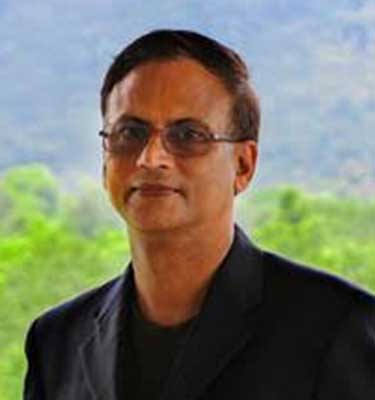

Pankaj Jain, PhD
Professor & Head, Humanities & Languages · Director, The India Centre · FLAME University, Pune

Scholar, Author, Academic Leader
Pankaj Jain is an internationally recognised scholar-leader with over 30 years of experience spanning Indian Knowledge Systems, Sustainability, Jain Studies, Film Studies, and Diaspora Studies. A Fulbright-Nehru Fellow and prolific author of eight books published with Oxford University Press, Routledge, Springer, Bloomsbury, and Manohar, he combines deep scholarly achievement with a distinguished record of academic administration across India and the United States.
His work has been featured in The New York Times, BBC, National Geographic, Forbes India, and The Washington Post. Morgan Freeman interviewed him for the National Geographic series The Story of God.
Bridging rigorous academic scholarship and broad public discourse across continents.
He holds a PhD in Religious Studies from the University of Iowa, an MA from Columbia University, and a BE in Computer Science from Karnatak University — a combination that reflects his rare interdisciplinary range.
Areas of Specialisation
Books
Eight books with leading academic publishers — Oxford University Press, Routledge, Springer, Bloomsbury, and Manohar.
Forthcoming: Reframing Indic Studies: Beyond the Imperialism of Categories (Manohar, 2026)
Selected Articles & Chapters
Over 100 peer-reviewed publications in leading journals including Worldviews, Journal of Visual Anthropology, Zygon, and more.
- "The Matrix, Advaita Cosmology, and Ecological Consciousness," Worldviews, Vol. 29, Issue 4 (with Shikha Sharma)
- "Kantara (2022) through the Lens of Indian Religious and Environmental Philosophy," Worldviews, Vol. 29, Issue 3 (with Chirag Hegde)
- "Flora and Farming in Jainism," Worldviews, 2025, Vol. 29, Issue 2, pp. 170–179
- "Exploring the Religious and Environmental Allusions in Ram Teri Gaṅgā Maili," Worldviews, 28.3, 2024 (with Khushi Kapoor)
- "Ship of Theseus: A Jain Monk's Nonviolent Struggle for Animal Rights," Worldviews, 28.2, 2024
- "Interpreting and Responses to Pandemics in Indian Philosophical Traditions and Films," Worldviews, 27.2, 2023
- "'Children of the Earth' to 'Dark Wind': Nature, Environment, and Climate in Indian Films," Journal of Visual Anthropology, 36.1, 2023
- "Ecocritical Analysis of Classics by Three Indian Film Maestros," Worldviews, 26.3, 2022
- "Climate Engineering from Hindu-Jain Perspectives," Zygon, Vol. 54, Issue 4, 2019
- "From Padosi to My Name is Khan: Portrayal of Hindu Muslim Relations in South Asian Films," Journal of Visual Anthropology, 24.1, 2011
- "Dharmic Ecology: Perspectives from the Svādhyāya Practitioners," Worldviews, 13.3, 2009
- "Jainism, Dharma, and Environmental Ethics," Union Seminary Quarterly Review, 61.1, 2011
- "Bishnoi: An Eco-Theological 'New Religious Movement' in the Indian Desert," Journal of Vaishnava Studies, 18.2, 2010
- "Renunciation and Non-renunciation in Indian Films," Religion Compass, 4(3), 2010
- "Reinterpreting Yajña as Vedic Sacrifice," Brahmavidya: Adyar Library Bulletin, vol. 74–75, 2011
- "The Mahabharata for Ecodharmic Activism: Examples from the Bishnoi and Svādhyāya Communities," in Dialoguing with Timeless Text, Motilal Banarsidass, 2026
- "India's Diasporic Diplomacy: A Millennial Survey," in The Future of Indian Diplomacy, KW Publishers, 2025
- "The Jain Islands in the Hindu Heartland," in Sacred Heritage and Pilgrimages in Cities, Springer, 2025
- "Jain Dharma as Virtue Ethics for Sustainability," in The Virtues of Sustainability, Oxford University Press, 2021
- "Modern Hindu Dharma and Environmentalism," in The Oxford History of Hinduism, Oxford University Press, 2019
- "Dharma for the Earth, Water, and Agriculture," in Religion and Sustainable Agriculture, University Press of Kentucky, 2016
- "Bovine Dharma: Nonhuman Animals and the Svādhyāya Parivar," in Rethinking the Nonhuman, Routledge, 2014
- "From Zoroaster to Dharma: Ancient Persian and Indian Ethics in an Age of War," The Times of India, Mar 2026
- "When Textbooks Change, Who Decides What Matters?" The Times of India, Jan 2026
- "Beyond Silence: The Diaspora's Cultural Accountability," The Times of India, Oct 2025
- "From Gaṇeśa to the Gītā: Ten Dharmas for Modern Leaders," The Times of India, Aug 2025
- "Jainism and Death," The New York Times, Jul 2020 (with George Yancy)
- "Conservative Ideas for Conservation of Mother Earth," The Daily Caller, Oct 2018
- "For the Love of Music," Times of India's Speaking Tree, Nov 2013
- "The Cosmic Questions behind the Cosmic Dance," Washington Post – On Faith, Nov 2010
- "Dharmic Method to Save the Planet," HuffingtonPost.com, May 2011
- "Indic Climate Ethics Can Address Energy Poverty," Times of India, Mar 2022
- "Five Indic Theories that Can Influence Climate Engineering Measures," The CSR Journal, Nov 2021
Awards & Fellowships
Academic Leadership
Media Appearances
Featured in leading global publications and interviewed by Morgan Freeman for National Geographic.
#DiscoverIndia Podcast
Exploring Indian culture, religion, music, and sustainability in conversation with scholars and practitioners. Available across all major platforms.
India
Courses Taught
Undergraduate
- Bollywood: Films and Cultures of India
- Religion and Ecology
- Indian Philosophy
- World Religions
- South Asian Philosophy and Religion
- Applied Ethics
- From Mahavir to Mahatma Gandhi: Jainism and Nonviolence
Graduate & Online
- Environmental Anthropology
- Religion and Ecology
- Sanskrit Religious Texts
- Asian Religions and Philosophies in Practice
- Jainism on UGC's Swayam
- Bollywood and Indian Culture
- Introduction to Asian Religions on UGC's Swayam